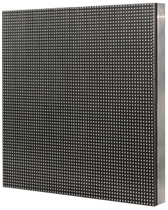
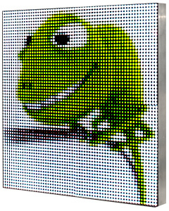

Светодиодная панель Ledmon представляют собой законченную конструкцию состоящую из отдельных светодиодных модулей и контроллера, объединенных в одном корпусе. Основная функциональность панели заключается в воспроизведении GIF и АPNG анимации в непрерывном режиме. Применение модулей с различными характеристиками, а также комбинирование их количества по ширине и высоте, позволяют изготовить панели Ledmon с многочисленными вариантами разрешения и физическими размерами.
 В зависимости от примененного цветового профиля при загрузки данных, изменяется максимально возможное разрешение, а также количество отображаемых цветов. Ниже представлены варианты конфигурирования панели.
- Профиль " 3 бита" - Максимальное разрешение 64 х 768 пикселей. Количество цветов - 8.
- Профиль "24 бита" - Максимальное разрешение 64 х 96 пикселей. Количество цветов - более 16 млн.
Загрузка данных осуществляется путем записи файла на карту SD, которая вставляется в контроллер панели. Поддерживаются карты формата SDHC, емкостью от 4 до 32 гигабайт. Файл формируется специальной программой с помощью персонального компьютера. Скачать программу.
Технические характеристики:- Минимальное разрешение - 32 х 32 пикселя.
- Напряжение питания - внешний источник 5 В.
- Потребляемая мощность - 80 Вт.*
- Физические размеры - 384 х 384 х 35 мм.*
*Зависит от фактического разрешения панели. Приведенные параметры соответствуют конструкции разрешением 64 х 64 пикселя и шагом расположения пикселя 6 мм.